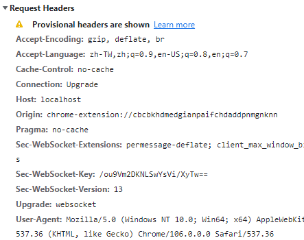

# 環境
在 docker compose 中，使用 nginx 導向 websocket 到 container 內
# 錯誤訊息
websocket 連接不上，查看 request headers 顯示 Provisional headers are shown

# Solution
搜尋解決方法是在 nginx.conf 內加上
proxy_set_header Upgrade $http_upgrade; | |
proxy_set_header Connection "upgrade"; |
# 範例
location /backend/ { | |
proxy_pass http://backend/; | |
proxy_set_header Host $host; | |
proxy_set_header X-Real-IP $remote_addr; | |
proxy_set_header X-Forwarded-For $proxy_add_x_forwarded_for; | |
proxy_set_header X-Custom-Referrer smc_identity_layer; | |
# websocket 要加下面兩個 | |
proxy_set_header Upgrade $http_upgrade; | |
proxy_set_header Connection "upgrade"; | |
} |
# 驗證
比較有修正前跟修正後，後端實際收到的 request header
# 修正前 request headers
Headers({'host': 'localhost', | |
'x-real-ip': '192.168.224.1', | |
'x-forwarded-for': '192.168.224.1', | |
'x-custom-referrer': 'smc_identity_layer', | |
'connection': 'close', | |
'pragma': 'no-cache', | |
'cache-control': 'no-cache', | |
'user-agent': 'Mozilla/5.0 (Windows NT 10.0; Win64; x64) AppleWebKit/537.36 (KHTML, like Gecko) Chrome/106.0.0.0 Safari/537.36', | |
'origin': 'chrome-extension://cbcbkhdmedgianpaifchdaddpnmgnknn', | |
'sec-websocket-version': '13', | |
'accept-encoding': 'gzip, deflate, br', | |
'accept-language': 'zh-TW,zh;q=0.9,en-US;q=0.8,en;q=0.7', | |
'sec-websocket-key': 'iBVj1v1X8xkD324lsXZSUA==', | |
'sec-websocket-extensions': 'permessage-deflate; client_max_window_bits'}) |
# 修正後 request headers
Headers({'host': 'localhost', | |
'x-real-ip': '192.168.208.1', | |
'x-forwarded-for': '192.168.208.1', | |
'x-custom-referrer': 'smc_identity_layer', | |
'upgrade': 'websocket', | |
'connection': 'upgrade', | |
'pragma': 'no-cache', | |
'cache-control': 'no-cache', | |
'user-agent': 'Mozilla/5.0 (Windows NT 10.0; Win64; x64) AppleWebKit/537.36 (KHTML, like Gecko) Chrome/106.0.0.0 Safari/537.36', | |
'origin': 'chrome-extension://cbcbkhdmedgianpaifchdaddpnmgnknn', | |
'sec-websocket-version': '13', | |
'accept-encoding': 'gzip, deflate, br', | |
'accept-language': 'zh-TW,zh;q=0.9,en-US;q=0.8,en;q=0.7', | |
'sec-websocket-key': 'j2NwT86WmJt6rIyatTa5rw==', | |
'sec-websocket-extensions': 'permessage-deflate; client_max_window_bits'}) |